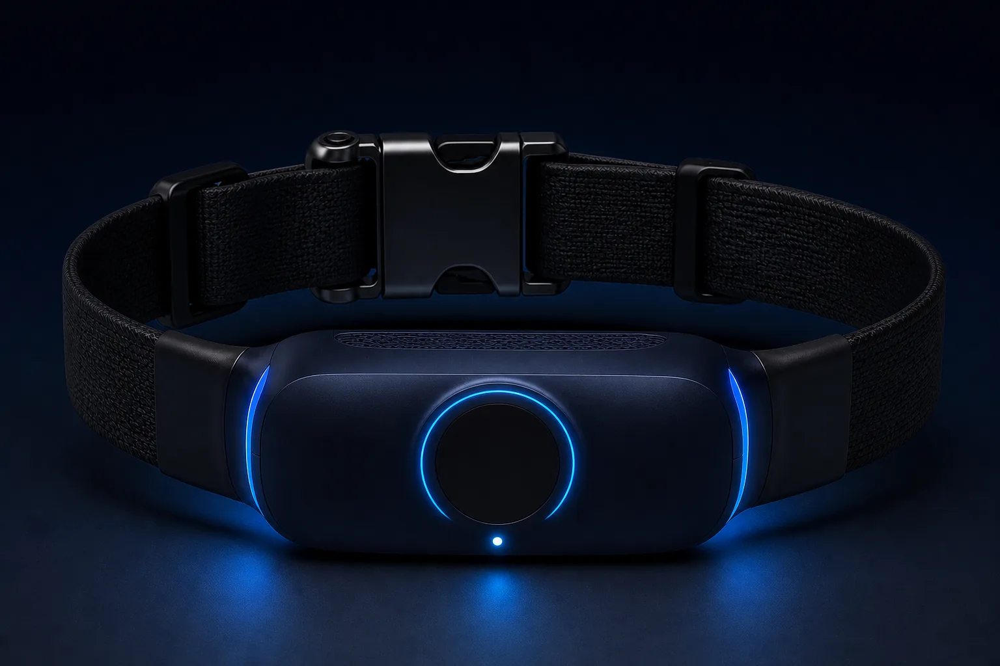
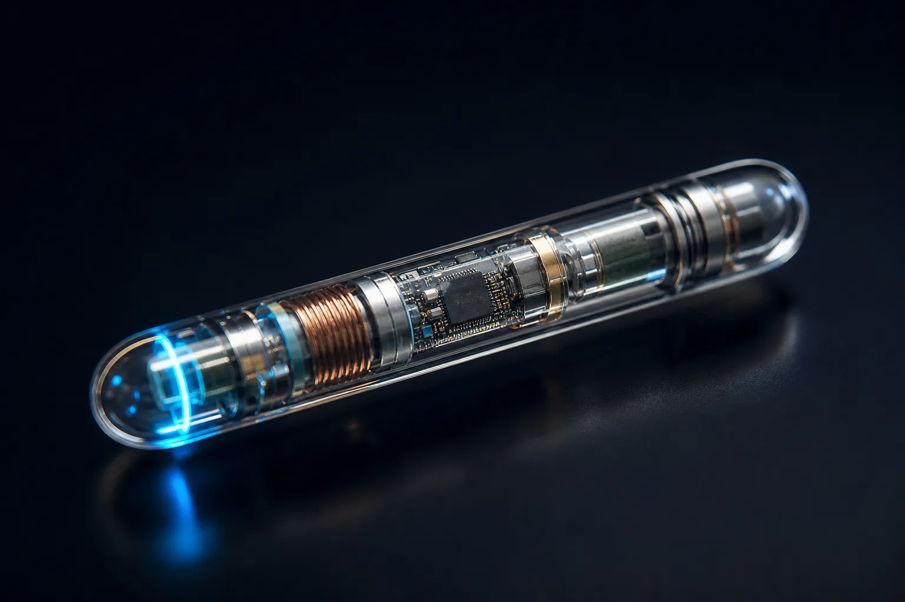

Снижение активности
Питомец стал двигаться меньше обычного — частый ранний признак недомогания.
Ошейник, камера и имплант Animo работают вместе — отслеживают здоровье, активность и поведение питомца в реальном времени.
«Узнайте, что чувствует питомец, до того как появятся симптомы.»

Экосистема устройств
Три устройства закрывают разные стороны здоровья и работают как единая система. Раскройте карточку, чтобы увидеть, что отслеживает каждое.
Постоянный мониторинг во время прогулок и дома
Отслеживает
Наблюдает за поведением, пока вас нет рядом

Отслеживает
Глубокие физиологические данные изнутри

Отслеживает
Раннее обнаружение
Система ищет отклонения от нормы конкретного питомца — и подсказывает, когда стоит присмотреться внимательнее.
Питомец стал двигаться меньше обычного — частый ранний признак недомогания.
Изменения в движении, позе и поведении, по которым видно дискомфорт.
Беспокойство в одиночестве, навязчивые действия, реакция на стресс.
Прерывистый или беспокойный сон — сигнал, что что-то идёт не так.
Сочетание показателей, при котором стоит показать питомца врачу.
Перемены в питании, питьевом режиме и привычном распорядке дня.
Для кого
Одна система решает разные задачи — от заботы об одной собаке до мониторинга десятков животных.
Спокойствие каждый день
Здесь появится живое фото питомца и хозяина — чтобы показать заботу, а не технику.
Здоровье, безопасность и контроль активности любимца — каждый день.
Наблюдение за группой животных и репродуктивный мониторинг.
Дистанционный мониторинг пациентов между визитами.
Сбор поведенческих данных для научных и продуктовых задач.
Animo непрерывно строит модель организма и отслеживает изменения до появления симптомов.
Узнать подробнееМодель состояния
в нормеИллюстративная панель. На этом месте может быть реальная визуализация данных.
Сравнение
Большинство трекеров показывают данные. Animo объясняет состояние и предупреждает заранее.
Связка, которой нет ни у кого.
Готовы поговорить
Расскажем подробнее об устройствах, технологии и условиях сотрудничества.
Запросить контакты и презентациюanimo.devices@gmail.com